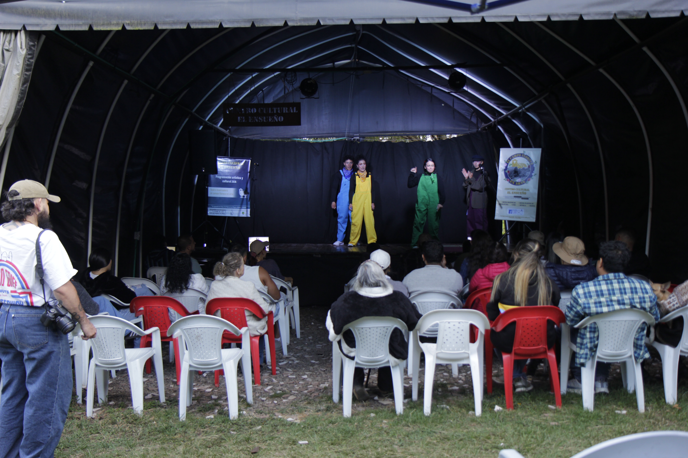
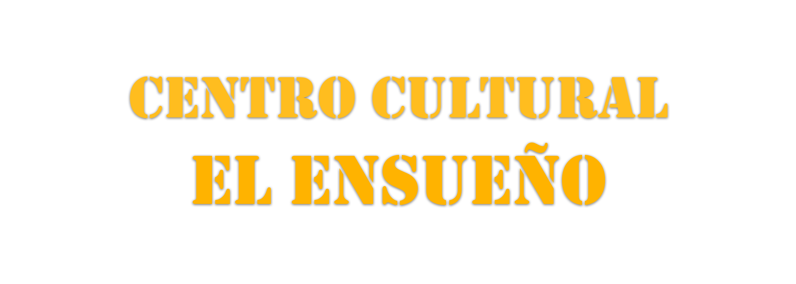
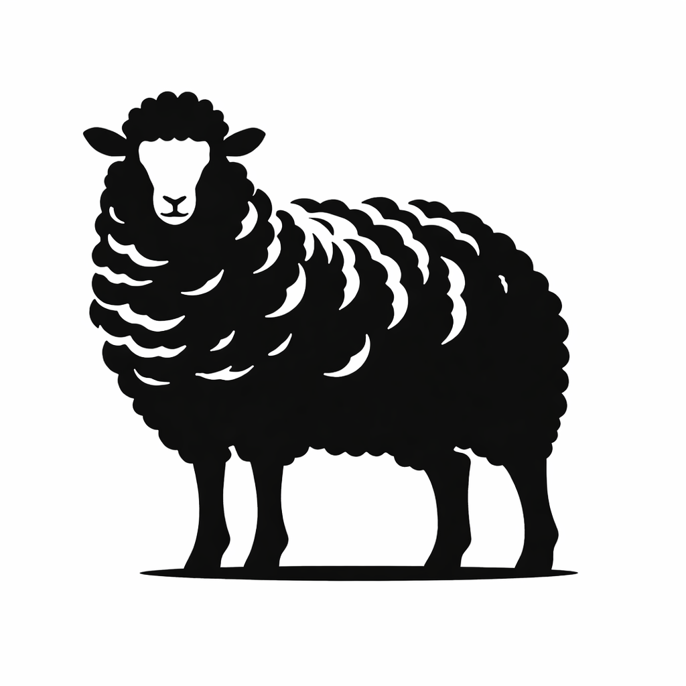
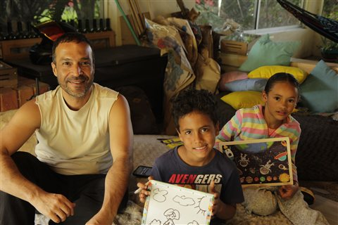
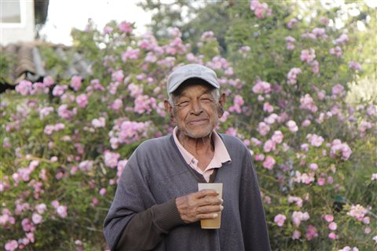
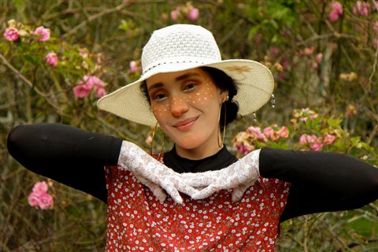
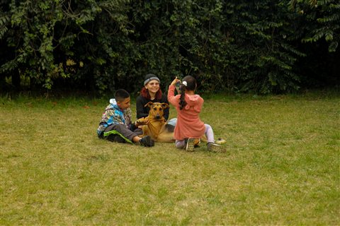
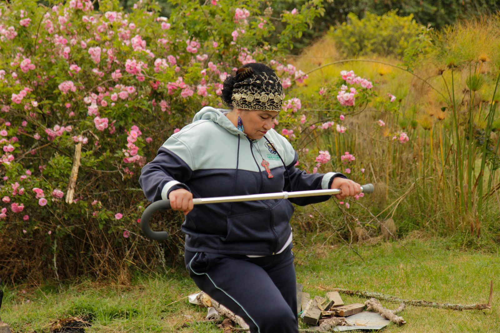

01
Sábados al teatro
Obras, conciertos y Cine Club para encontrarnos alrededor del arte.
Conoce Sábados al teatro
San Pedro de los Milagros · Antioquia
El Ensueño es un centro cultural que abre espacio al arte, la memoria y las historias que nacen en comunidad.

Un álbum de pequeños encuentros
01 / CrearTodo empieza con un trazo ↗
02 / RecordarUna casa, muchas historias ↗
03 / ImaginarLa vida entra en escena ↗
04 / EncontrarnosTambién se viene a estar ↗Cada fotografía abre un camino. Elige el tuyo.
Somos un lugar de creación, aprendizaje y conversación. Un espacio para que niñas, niños, jóvenes y personas adultas se acerquen al arte, compartan saberes y hagan comunidad.
Creemos en el arte como una manera de habitar el territorio con sensibilidad, curiosidad y alegría.
Procesos que se transforman con las personas que llegan, se quedan y vuelven.

01
Obras, conciertos y Cine Club para encontrarnos alrededor del arte.
Conoce Sábados al teatro
02
Dramaturgia autoficcional con adultos mayores y promoción de la lectura a través de la lúdica.
Conoce los procesos formativosTeatro, lecturas, música y encuentros para compartir en El Ensueño.
Ver programación hasta diciembreConsulta las fechas y los detalles de nuestros encuentros en la programación cultural de 2026.
Horarios
Martes · 9:00 a. m. – 12:00 p. m.
Sábados · 2:00 p. m. – 8:00 p. m.